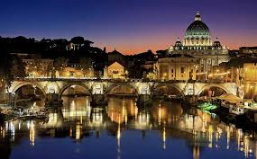

Bioko est une île située dans le golfe de Guinée, appartenant à la Guinée équatoriale. C'est là que se trouve la capitale du pays, Malabo. Il est à 37 km au large des côtes du Cameroun et a une superficie de 2017 km². Sa population était de 130 000 habitants en 2005, après avoir augmenté à environ 335 000 en 2014. Auparavant, à l'époque espagnole, elle était connue sous le nom de Fernando Poo, du nom de son découvreur au 15ème siècle, le Portugais Fernão do Pó.
Le Parc National de Malabo est un parc à thème de loisirs construit par le gouvernement équatorial (Ministère du Tourisme et de la Culture) sur l'île de Bioko.Ce grand parc, inauguré le 16 juin 2016, a une superficie totale de 87 hectares et dispose d'espaces de loisirs, d'art, de balades, de sports, de restauration, etc.
Ureka: Cette petite ville située au sud de l'île est riche en primates et oiseaux. De plus, il se distingue par ses impressionnantes plages vierges et par ses cascades naturelles où il est possible de se baigner. Pendant les mois de novembre à février, il est possible d'observer la nidification des tortues marines la nuit
La ville de Sipopo est une zone de loisirs touristiques et de congrès internationaux située dans le quartier de Sipopo, sur l'île de Malabo, en Guinée équatoriale. La ville a été construite par le gouvernement de la République de Guinée équatoriale pour accueillir des réunions internationales. Le 5 juin 2011, coïncidant avec les célébrations de l'anniversaire de S.E. le Président de la République, la ville de Sipopo a été inaugurée. La superficie totale de Sipopo est de 3 003 320,39 m² et le gouvernement de Guinée équatoriale a investi plus de 580 000 millions d'euros dans la construction de l'ensemble du complexe qui contribuera à diversifier l'économie du pays.